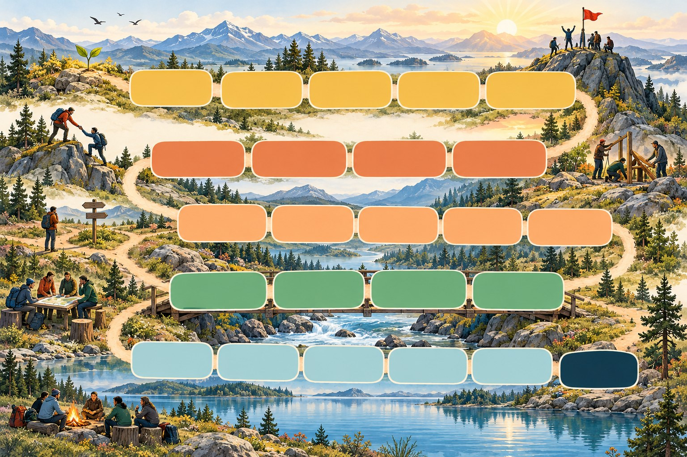

Stillingen
Tastatur: mellomrom for kast og neste, A, B eller C for å registrere svaret, V for å bytte mellom kortet og hele brettet, F for fullskjerm.

Fra trygghet til læring – et sterkere team, sammen. Start rett på, eller velg hva du skal gjøre.
Dette er en demo. Kortene er utkast. Alt du gjør, lagres bare i denne nettleseren. Svar fra telefon er ikke med i demoen.
· · Et spill fra Lagverk
«Avslutt økta» gir sluttskjermen med premie, puls og «Før dere går». Et kort som ikke er besvart, telles ikke.
Én felles brikke for hele teamet. Fem soner fra trygghet og tillit til læring, med dilemmaer, refleksjoner, øvelser og avtaler underveis. Det handler om å snakke sammen, ikke om å vinne.
Du finner dette igjen under «Slik spiller dere» nederst på forsiden.
Tastatur: mellomrom for kast og neste, A, B eller C for å registrere svaret, V for å bytte mellom kortet og hele brettet, F for fullskjerm.
Klikk på illustrasjonen der brikkene skal stå, i denne rekkefølgen: Start, rute 1, rute 2 og videre. Det siste punktet blir Mål.
Skriv fra-rute og til-rute med bindestrek mellom. Høyere til-rute er en stige, lavere er en sklie. Linjene tegnes på illustrasjonen.
Lim inn i første ledige rad i Excel-filen, og legg illustrasjonen i samme mappe.
Du er ikke logget inn i Claude. Det du gjør her, gjelder bare denne nettleseren.
| Ark | Kolonner | Innhold |
|---|---|---|
| Tema | TemaID, Tema, Beskrivelse, BrettID | Én rad per tema. BrettID bestemmer hvilket brett temaet spilles på. Bruk «generelt» for tema uten egen illustrasjon. |
| Kort | TemaID, Rute, Tittel, Situasjon, Beste svar, Tilbakemelding beste, Middels svar, Tilbakemelding middels, Svakeste svar, Tilbakemelding svakeste, Spørsmål til alle, Fortelling, KortID, Status | Én rad per dilemma. KortID er en fast kode per kort, så historikk og innspill følger kortet selv om tittelen endres. Status er Utkast eller Godkjent. Rute er valgfri. Kortene trekkes tilfeldig, og kort gruppa ikke har spilt på lenge, kommer først. Flere kort på samme rute byttes på. Fortelling er valgfri og vises når kortet står på en stige eller sklie og brikken flytter seg. |
| Brett | BrettID, Navn, Bildefil | Én rad per brett. Bildefil er filnavnet i mappa. Uten bildefil tegner spillet brettet selv, og arket Ruter trengs ikke. BrettID «generelt» er det innebygde tegnede brettet. |
| Ruter | BrettID, Rute, X, Y | Start, hver rute og Mål. X og Y er tall fra 0 til 1000. Lag radene i Brettverksted. |
| Stiger og sklier | BrettID, Fra, Til, Fortelling | Valgfritt ark. Én rad per stige eller sklie. Til høyere enn Fra er en stige, lavere er en sklie. Fortelling er setningen som vises når brikken flytter seg. |
| Innstillinger | Innstilling, Verdi | Valgfritt ark. Navn, tekster og oppsett for et annet miljø, for eksempel lederlaget: Spillnavn, Organisasjon, Ingress, Velkomsttekst, Standardgruppe, Kort oppsett, Middels oppsett, Langt oppsett, Lag i kort oppsett, Tema for kort oppsett, Utvikler. |
| Historikk | ID, Tidspunkt, Gruppe, Lag, TemaID, Tema, Kort, Svar, Poeng, Person, KortID | Valgfritt ark. Radene kopieres fra dashbordet. Person er fylt ut for svar fra en telefon og tom for svaret til laget. |
Lagene trykker «Vi mener noe annet» når svaret er vist. Bruk innspillene når kortene revideres i Excel-filen, og merk dem behandlet.
Svar per person vises ikke under «Se utviklingen». Herfra åpner du dashbordet med personer i velgeren og egen sammenligning per person.
Radene limes inn nederst i arket Historikk i Excel-filen. Uten felles historikk kan flere grupper samles slik: neste gang mappa velges under «Innhold», leses hele arket inn.
Sletting fjerner svar fra felles historikk og fra denne nettleseren. Kopier i andre nettlesere og i Excel må slettes der.
Lista vises på dashbordet under «Se utviklingen». Her kopieres den til Excel, og enkeltpunkter kan slettes. Et slettet punkt forsvinner også fra «Fra forrige økt» og fra dashbordet.
| Oppgave | Hvem |
|---|---|
| Lede en økt der svarene registreres på storskjermen | Alle som kan åpne siden |
| Svare fra telefon, og bruke felles tema, standard og det lagene har notert | Innloggede med tilgang som bidragsyter eller høyere |
| Lede en økt med telefonsvar | Eier og redaktører |
| Se felles historikk og persontall | Eier og redaktører |
| Publisere tema, sette standard, eksportere og slette | Eier og redaktører |
Tilgangen endres i delingsmenyen til siden i Claude. Spillet kan ikke endre den, og kan ikke vise hvem som har tilgang.
Den som åpner siden uten å være logget inn, kan administrere sin egen nettleser: lese inn en Excel-fil, sette standard og tømme lokale svar. Ingenting av det når felles lagring.
Eksempeldata. Slik ser dashbordet ut når dere har spilt noen økter. Tallene er ikke deres.